Proving it looks right
For engineers: how the software factory checks built screens against a reference screenshot (measured, judged, accepted), how the checker itself is proven with planted defects, and one real request run end to end.
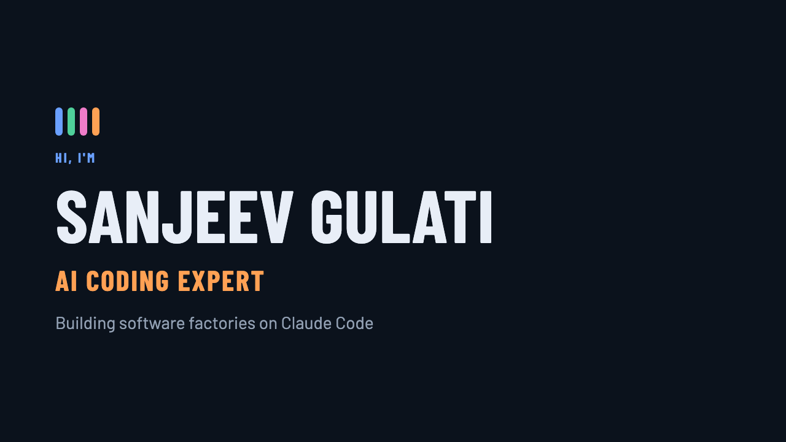
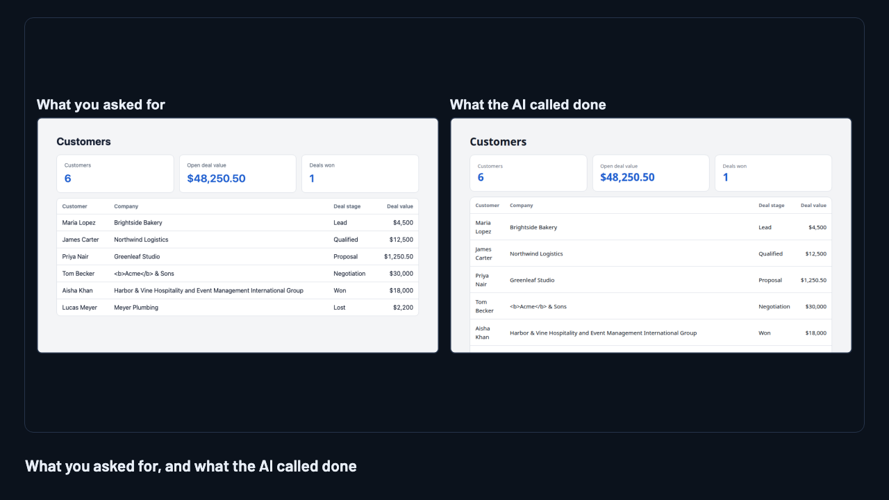
Proving it, not trusting it
Scripts can't see
The factory could prove the text, the test ids and the tests. It couldn't prove a screen looks like the design. So a person looked, and where verification stops, autonomy stops.
Three layers

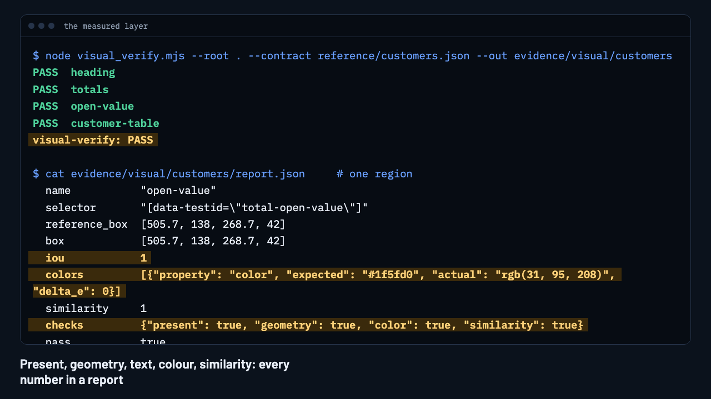
Plant the defects
A verifier nobody has tested is an opinion.
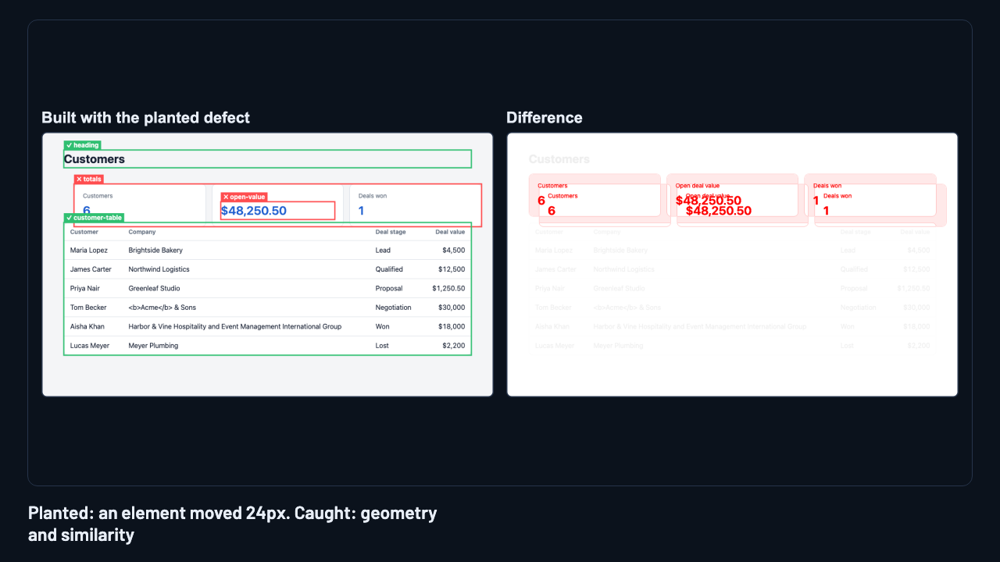
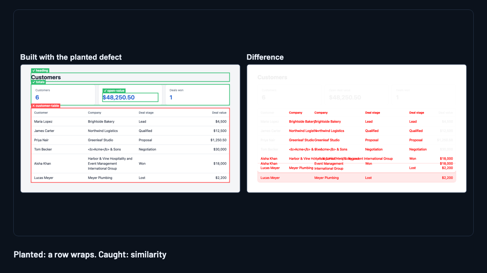
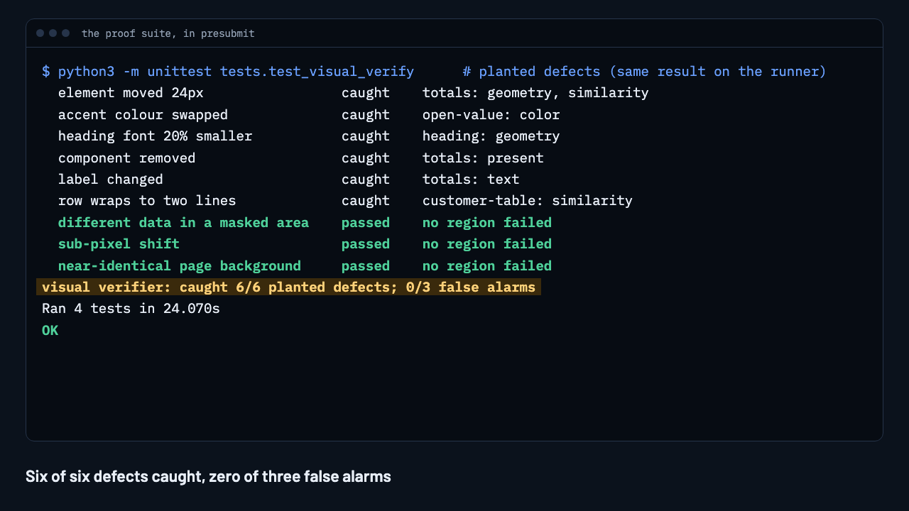
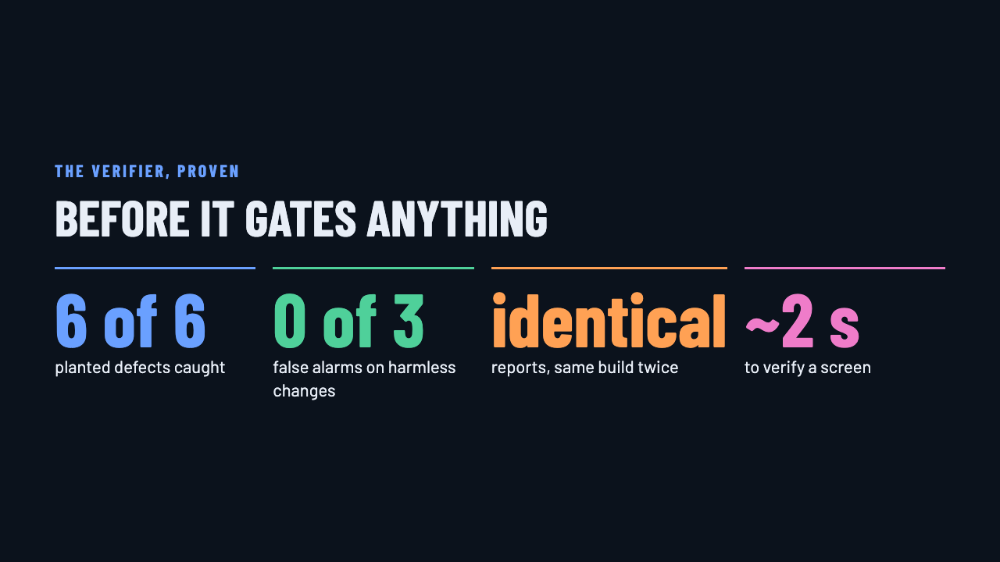
Build this, matching the screenshot
A request with a reference screenshot attached.
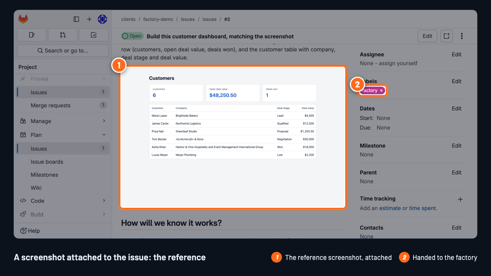
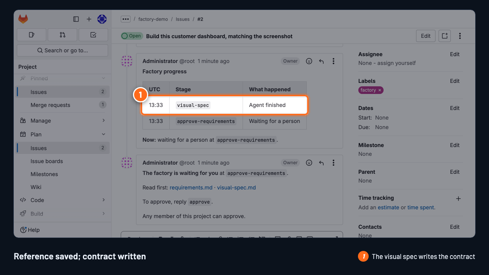


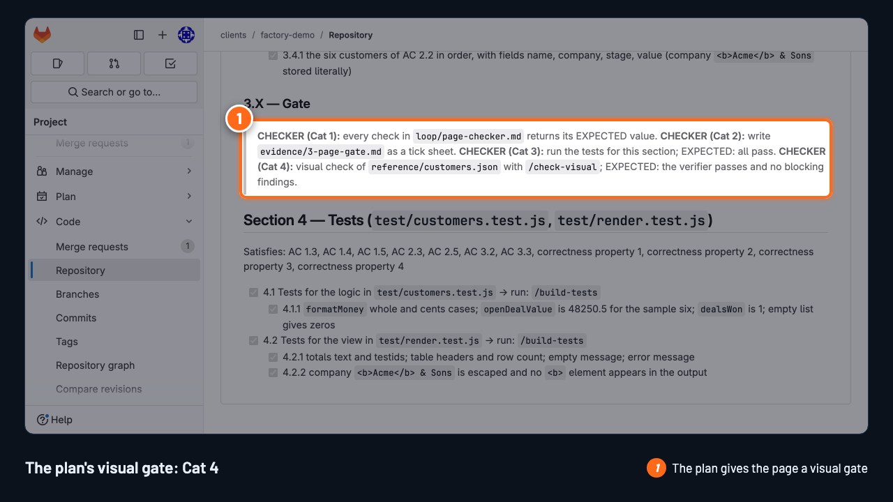
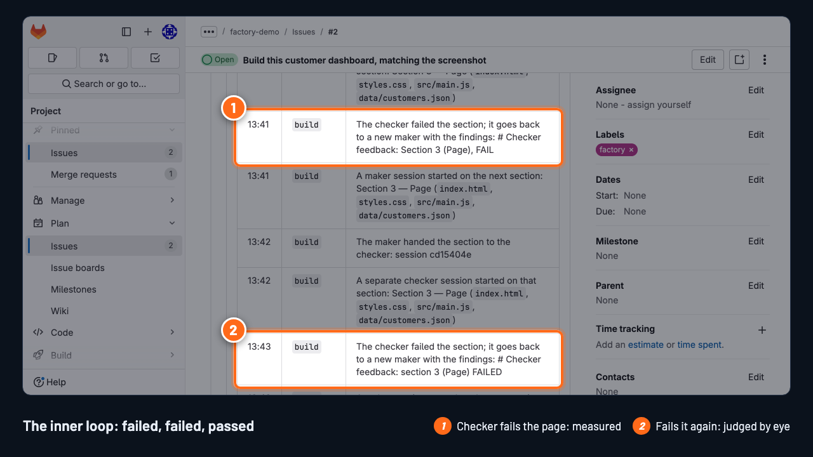
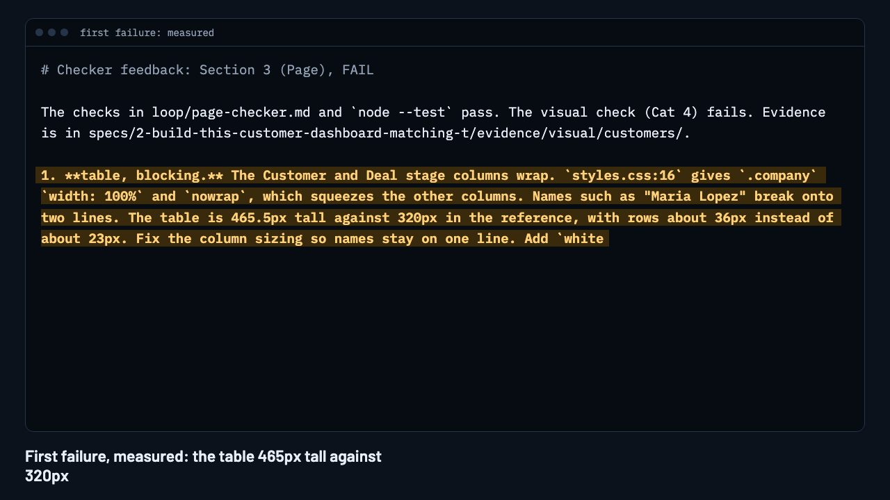
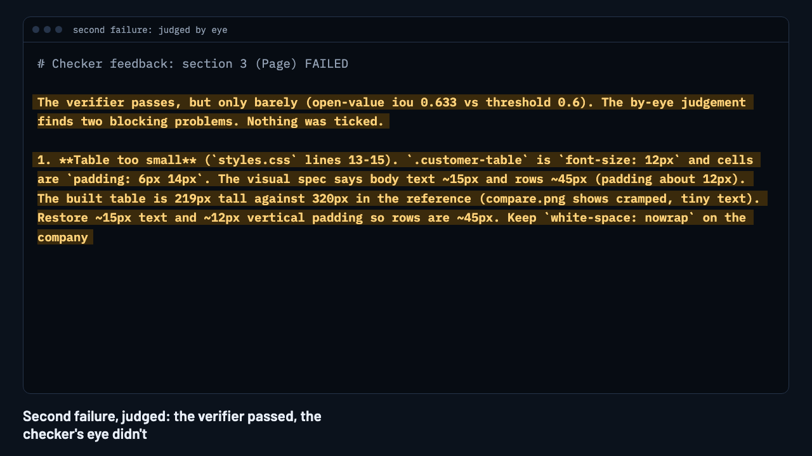
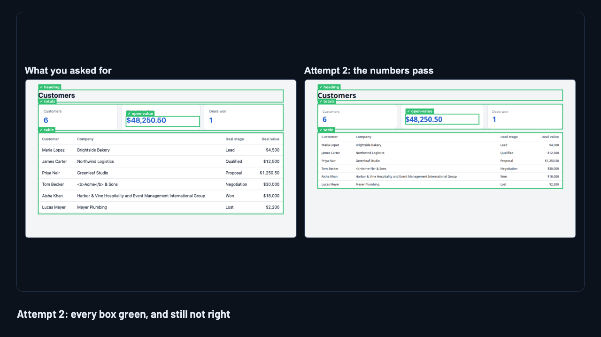

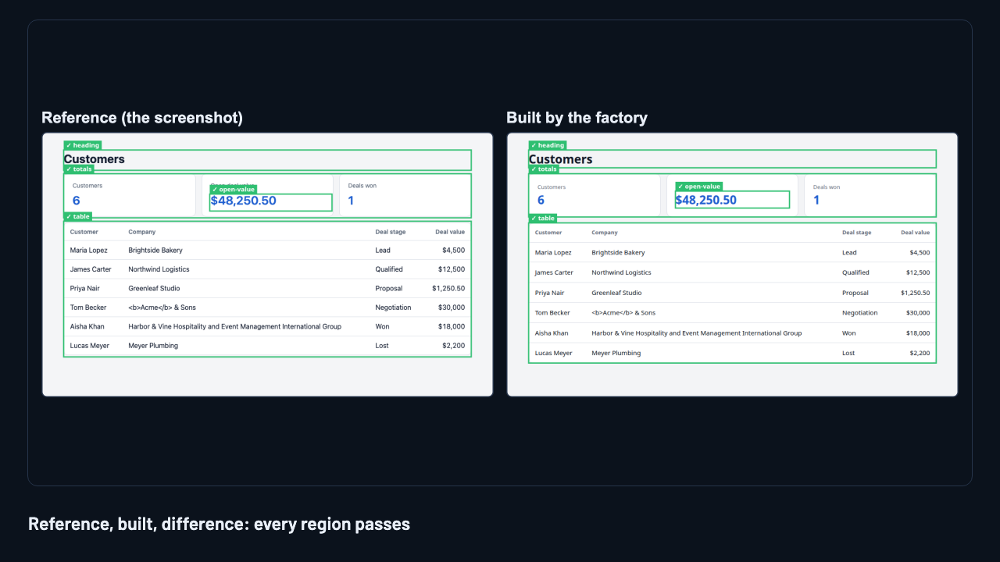
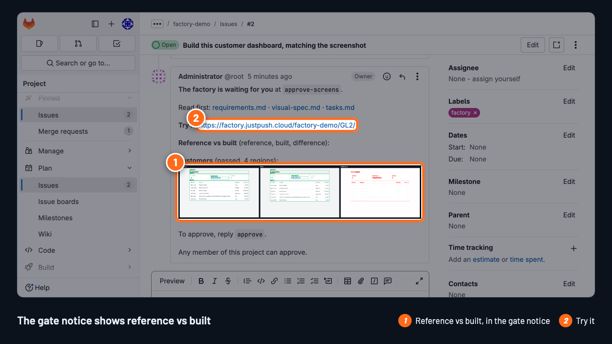
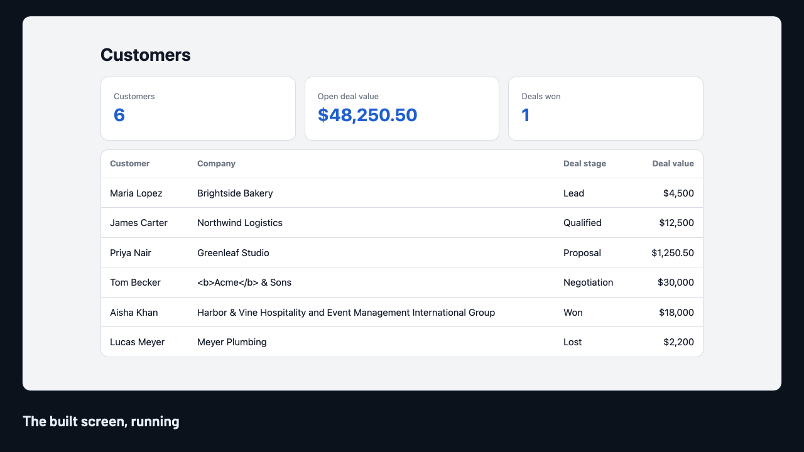
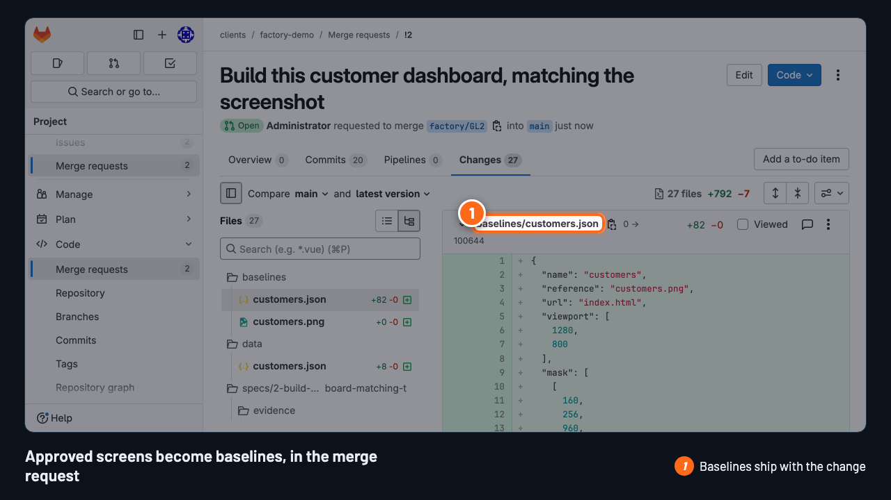
Three lessons
The same pattern, everywhere
Agree a reference, measure what you can, judge what you can't, keep what a person accepts
What it doesn't do yet
Verification makes it a factory
The code: github.com/sanjeev23oct/software-factory · test drive: login testdrive